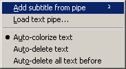

In this tutorial we're gonna see how to use the new text pipe feature to synchronize an already made transcript.
The first thing to do is of course to create a new project. To get more
details about this process, follow the first part of the
"Making a transcript of your favourite TV series
with VisualSubSync" tutorial.
So here we are, our new project is created :
It's now time to load our transcript. For that we use the Edit>Text pipe>Load text pipe... menu.
You can load raw text file or rtf files. Here we choose a raw text file :
Ok, the text pipe is loaded, we are now ready for the synchronization :
First we select the subtitle in the WAV display part. (1)
Then we select the matching text in the text pipe. (2)
Finally we right click in the text pipe and choose Add text from pipe (it's recommended to add a shortcut and use it for maximum efficiency) :
As you see the subtitle has been added, and we see it with the same color in both the WAV display and the text pipe.
And here is what we have we some more subtitles :
|  | When you add a subtitle from the text pipe you have different auto-something options :
|
Something else important to notice is that VisualSubSync works on a copy of the transcript saved at the same place as the project. The script is saved under the name projectname.vsssccript
Back